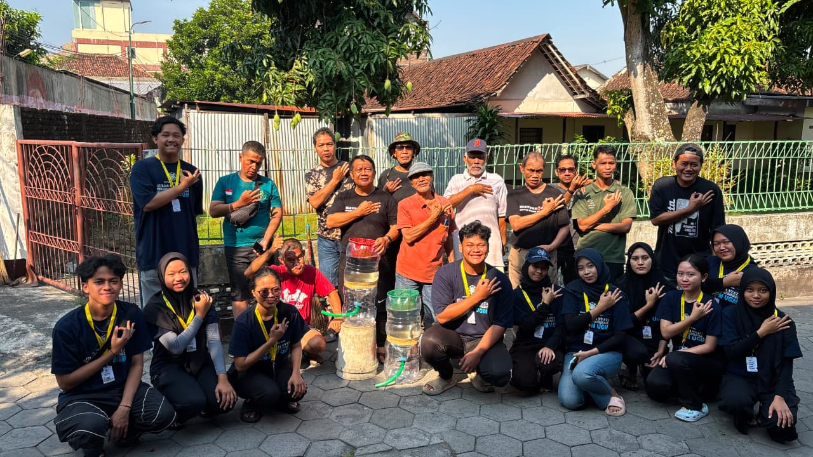
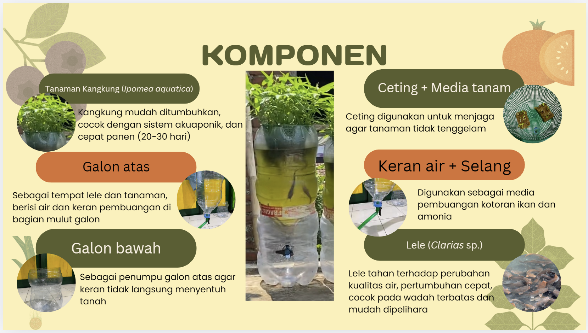
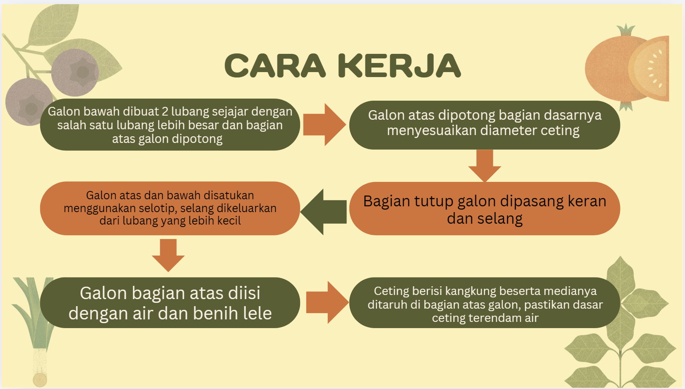
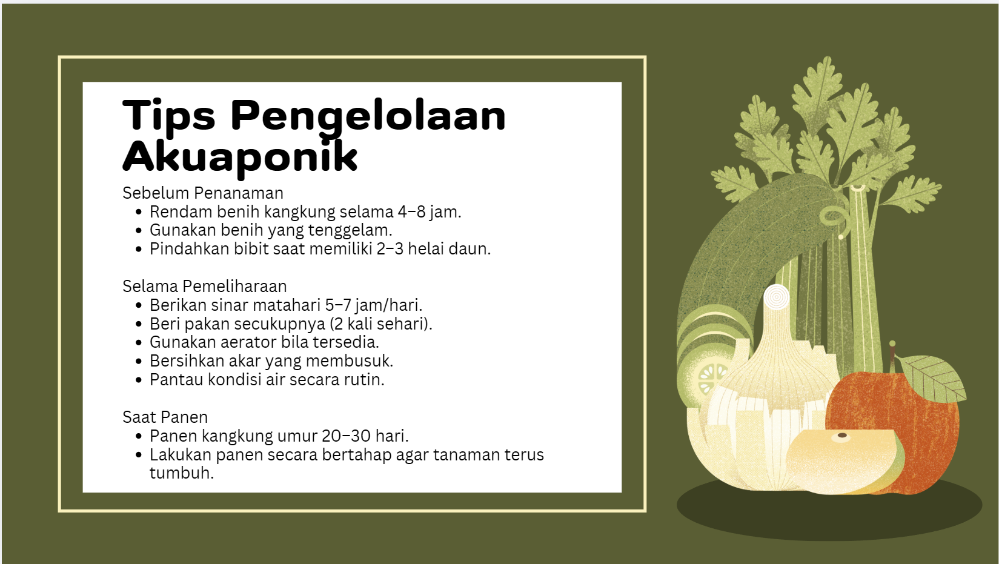

menu_book
Panduan
Sistem Akuaponik Lele Menggunakan Galon dengan Tanaman Berakar Air dan Edukasi Pemeliharaan Sistem Akuaponik Lele Berkelanjutan
Panduan pembuatan dan pemanfaatan galon bekas sebagai sistem akuaponik lele dengan tanaman berakar air yang memuat tahapan pembuatan, fungsi komponen, cara perawatan, serta edukasi pemeliharaan sistem secara berkelanjutan untuk mendukung ketahanan pangan dan pemanfaatan limbah secara optimal.

Informasi Utama
- check_circle Memanfaatkan limbah galon bekas
- check_circle Mendukung ketahanan pangan keluarga
- check_circle Mudah dirawat dan berkelanjutan
Dokumentasi

Persiapan Galon

Sistem Berjalan

Edukasi Warga

Perkembangan Lele